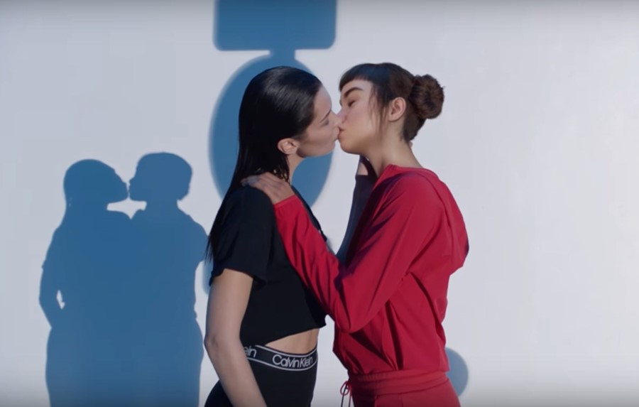
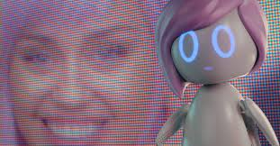

Although animated influencers aren’t capable of creating a scandal, that doesn’t mean controversy won’t ensue. Lil Miquela, one of the most popular virtual influencers, who partners with big brands such as Calvin Klein, Prada, Chanel, Burberry, etc. was featured in a video for Calvin Klein making out with Bella Hadid. The controversy that sprung from this was the fact that “it was queer-baiting, presenting two women kissing as exotic and bizarre” and “they [couldn’t] even cast an actual gay person?” (Tiffany). There are many skepticisms and critiques surrounding the use of Lil Miquela instead of a real person, but who are they blaming: the creators, or are we brainwashed far enough to blame the animated character itself?
Vox states “There are limits to the usefulness of ‘representation’ seen here when a job that could have gone to an underrepresented group went instead to a collection of pixels with no personal political context at all” (Tiffany). Many people say Lil Miquela is the real-life Ashley O, a hologram of Miley Cyrus’ pop character in the Black Mirror episode ‘Rachel, Jack and Ashley Too’. She’s not too far off from this character considering the fact that aside from being a model, she’s an artist with “100,000 monthly listeners on Spotify” (Daly). Black Mirror is known for its satirical stories that emphasize on the collective unease of the modern world. The combination of the greatest innovations and humanity’s darkest instincts collide, and we get to watch not only how it plays out, but also the consequences of when high tech becomes too advanced.
Have we actually reached the point where the disturbingly twisted reality of Black Mirror becomes exactly that—reality? Virtual influencers are taking over social media platforms, for the good and the bad. On one hand these 3D animations can replace traditional influencers, diminishing the need for companies to run background checks for scandals. On the other hand, they’re becoming so dangerously realistic that they’re being seen and treated as real human beings, whilst undermining the traditional beauty standard. I hope that large corporations don’t get caught up in the idea of glorifying a need for control with virtual influencers, and utilize this technology for the better.